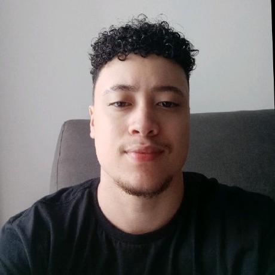

Sobre Nós

Luigi Bernardo
Programador principal e idealizador do Robot-Hero. Apaixonado por tecnologia e games retrô, responsável pela lógica do jogo e integração dos elementos visuais.

Gabriel Matos
Designer e artista visual do projeto. Criou os sprites, cenários e efeitos visuais que dão vida ao universo do Robot-Hero.

Henrik Mezedes
Responsável pela trilha sonora e efeitos sonoros. Produziu a música tema e os efeitos de tiro, pulo e impacto para uma experiência mais imersiva.